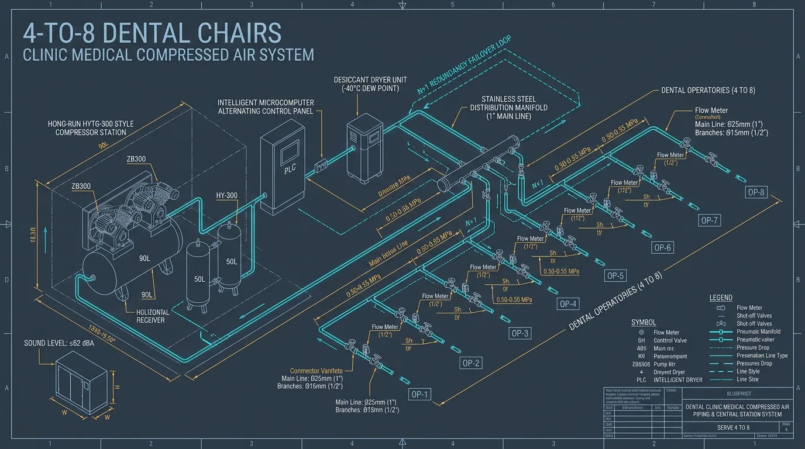
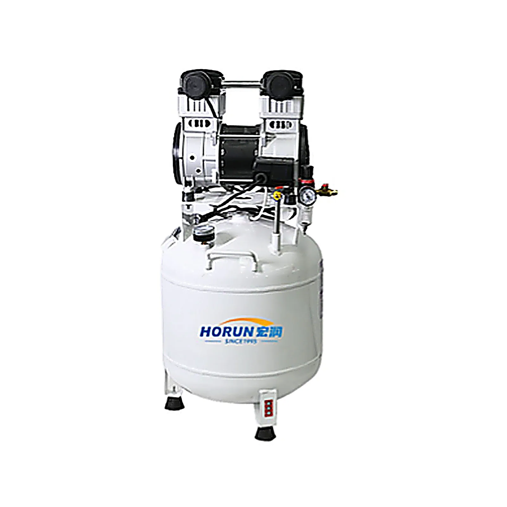

Hongrun HYTG-300 (2.2 kW / 3.0 HP) Dual-Pump Parallel Redundancy Compressor on 90L Heavy-Duty Receiver
Executive Engineering Summary: Central Station Architecture
- Preliminary Demand: Using 50 L/min per chair and k = 0.70, the planning loads are 4 chairs = 140 L/min (4.9 CFM), 6 chairs = 210 L/min (7.4 CFM), and 8 chairs = 280 L/min (9.9 CFM). The factor is an assumption, not a code value.
- Degraded Capacity Check: HYTG-300 combines two 1.1 kW ZB300 heads on a 90L receiver: 400 L/min total, approximately 200 L/min with one head unavailable. That is below the eight-chair planning load; HYT-400 retains approximately 400 L/min with one of three heads unavailable.
- Intelligent Microcomputer Alternation: Microcontroller alternates lead/lag pump status every cycle, preventing uneven PTFE ring wear and eliminating electrical peak starting spikes via 0-pressure delay logic.
- Piping Hydraulics: DN25 headers and DN15 drops are preliminary examples only. Verify velocity, fitting losses and terminal pressure using actual pipe dimensions, flow and equipment data in both normal and degraded operation.
When a solo dental chair loses air pressure, one patient appointment is delayed. But when a 4-to-8 chair dental polyclinic or surgical center suffers sudden compressor failure, 6 to 8 clinicians grind to an immediate halt simultaneously. Anesthetic wears off mid-procedure, surgeries are aborted, sterilized instruments cannot be dried, and the clinic incurs thousands of dollars in lost billing per hour.
For mid-scale practices, a single-pump compressor is a single point of failure. A multi-head arrangement can reduce some downtime exposure, but only if its remaining capacity covers the required load and the complete installation is validated. This guide compares HYTG-300 90L, HY-300 50L and HYT-400 120L without promising uninterrupted clinical service.
1. The Mid-Scale Dental Bottleneck: Why Single-Pump Systems Risk Clinic Shutdown
As a dental practice expands from 2–3 chairs to 4–8 treatment operatories, the clinical air dynamics transform fundamentally. At this scale, treatments encompass multiple simultaneous disciplines: routine restorative dentistry, high-demand air-scaler hygiene, heavy prophy sandblasting, CAD/CAM wet milling air purging, and surgical implant site drying.
Relying on a single large compressor pump head introduces four critical systemic vulnerabilities:
Single Point of Failure
A single blown valve reed, capacitor breakdown, or thermal cut-out instantly shuts down all 8 operatories simultaneously.
Thermal Fatigue & Continuous Duty
Excess concurrent demand can push a single pump toward its rated limit. Confirm the permitted duty cycle, cooling conditions and remaining capacity before relying on one train.
Planned Maintenance Access
Filter, dryer and valve service follows the exact model manual and site plan. Isolation arrangements and service time must be assessed before promising uninterrupted operation.
Severe Pressure Sag
When 4 hygienists activate scalers simultaneously, undersized buffer storage causes line pressure to plummet below 0.40 MPa.
2. The Flow & Diversity Math: Simultaneous Load Calculations for 4 to 8 Chairs
For a transparent first pass, use the same planning assumption as the on-site calculator: 50 L/min per chair and a simultaneous-use factor k = 0.70. These are preliminary assumptions, not values prescribed by NFPA 99 or another universal code. Replace them with an instrument schedule and measured or manufacturer-rated demand at the project pressure before equipment selection.
Using \(1\text{ CFM} \approx 28.3168\text{ L/min}\), the preliminary loads are:
Table 1.0: Preliminary 4–8 Chair Planning Matrix
| Clinic Scale | Active Chairs | Planning Factor (k) | Preliminary Demand | Pipe Sizing | Capacity Comparison |
|---|---|---|---|---|---|
| 4-Chair Clinic | 4 | 0.70 | 140 L/min (about 4.9 CFM) | Hydraulic calculation required | HYT-200: 300 total / 150 L/min one head out |
| 6-Chair Polyclinic | 6 | 0.70 | 210 L/min (about 7.4 CFM) | Hydraulic calculation required | HYT-400: 600 total / 400 L/min one head out |
| 8-Chair Clinic | 8 | 0.70 | 280 L/min (about 9.9 CFM) | Hydraulic calculation required | HYT-400: 600 total / 400 L/min one head out |
| 8-Chair Higher Reserve | 8 | 0.70 | 280 L/min (about 9.9 CFM) | Hydraulic calculation required | HYT-500: 800 total / 600 L/min one head out |
Normal and degraded capacities are nominal catalogue totals divided by head count. Confirm actual delivered capacity at the project pressure and the required reserve before selection.

Illustrative 4–8 Chair Ring Layout and Multi-Head Control; Pipe Sizes Require Hydraulic Verification
3. HYTG-300 (90L) vs. HY-300 (50L): Physical Specs & Parallel Kinematics
When architecting a 4-to-6 chair facility, clinicians frequently evaluate between installing a single high-power vertical HY-300 (1.1 kW / 50L) versus a dual-pump parallel HYTG-300 (2.2 kW / 90L) skid. Both utilize Hongrun's patented ZB300 wobble-piston pump heads with French Saint-Gobain self-lubricating PTFE composite seals, but their mechanical resilience and volumetric capacities serve distinct clinical objectives:

Compact Vertical FootprintHongrun HY-300 (1.1 kW / 1.5 HP)
50L Vertical Slim Cylinder · Single ZB300 High-Power Head
- Catalogue Air Delivery: 200 L/min
- Receiver Volume: 50 Liters (Vertical Cylinder, D=400mm)
- Running Sound Level: ≤ 65 dB(A)
- Dimensions (L × W × H): 450 × 450 × 880 mm
- Net Weight / Floor Space: 45.0 kg
 Dual-Pump Redundancy Flagship
Dual-Pump Redundancy Flagship
Hongrun HYTG-300 (2.2 kW / 3.0 HP)
90L Large Horizontal Buffer Tank · Dual ZB300 Parallel Heads
- Catalogue Air Delivery: 400 L/min total · 200 L/min one head out
- Receiver Volume: 90 Liters (Heavy-Duty Horizontal)
- Running Sound Level: ≤ 65 dB(A)
- Dimensions (L × W × H): 860 × 420 × 780 mm
- Net Weight / Redundancy: 77.0 kg · Two-Head Arrangement
4. Intelligent Dual-Pump Alternation & N+1 Redundancy Logic
The engineering brilliance of the HYTG-300 lies in its integrated microcomputer PLC management system. Unlike simplistic "both pumps run all the time" or "manual switch" configurations, Hongrun's intelligent control panel executes three proprietary algorithms:
The controller is intended to alternate lead/lag duty to balance accumulated runtime. Actual wear also depends on load, maintenance and operating conditions, so runtime balancing does not guarantee identical component life.
Staggered starting and unloading can reduce simultaneous starting current. Electrical supply capacity, protection settings and starting sequence must still be verified by the project engineer; they do not guarantee against breaker trips.
On a detected head fault, the controller should isolate the affected head and operate the available head at its remaining capacity. Clinical impact depends on whether that capacity covers the live load; HYTG-300 leaves about 200 L/min, not the full 400 L/min total.
5. Plant Room Spatial Layout, Acoustic Enclosures, and Air Quality Loop
For a 4-to-8 chair practice, positioning the compressor inside a dedicated utility plant room ensures optimal noise attenuation and environmental air purity. The physical installation must adhere to three foundational standards:
-
Dedicated Airflow Ventilation: The plant room (minimum 1.5 m² area) must feature a low-level air intake louver (≥ 300 cm²) and an exhaust ventilation fan (≥ 250 m³/h) to maintain ambient temperature below 35°C during continuous summer operation.
-
Closed-Loop Ring Main Piping (DN25): A closed-loop ring can offer two feed paths and improve pressure uniformity, but it does not eliminate dead legs or guarantee a pressure-drop reduction. DN25 is an illustrative assumption only; select pipe material, internal diameter and routing from applicable standards and a hydraulic calculation.
-
Desiccant Drying & Micro-Filtration Loop: Pair the HYTG-300 with an integrated twin-tower heatless desiccant dryer and 3-stage filtration (5 μm water separator → 0.01 μm particulate filter → 0.003 ppm active carbon vapor trap) to support moisture, particulate, and odor control. The HYTG-300 requires its own model-specific total-oil documentation and installed-configuration validation; it is not covered by TÜV certificate AK 50528335 0001. ISO 8573-1 Class 0 addresses total oil only and does not certify sterility or microbial control.
6. Commercial B2B Sales Playbook & Clinic Owner ROI Justification
Equipment distributors and practice consultants frequently encounter price sensitivity from clinic owners considering single vs. dual-pump systems. Use this engineering financial playbook to explain the true cost of ownership:
"Can I just buy two separate small 24L compressors and connect them together to save money?"
Engineering Reality: Two standalone compressors are not automatically a coordinated redundant system. Independent pressure switches can produce uneven loading, while shared receivers, controls, isolation, drainage and electrical protection require engineered integration and commissioning.
Selection Point: HYTG-300 integrates two ZB300 heads, a 90L receiver and alternating control in one catalogue configuration. Its published noise level is ≤65 dB(A); actual installed noise depends on room acoustics, vibration isolation and ventilation.
"How do I justify the higher cost of a dual-pump HYTG-300 to my clinic partners?"
The Financial ROI Calculation:
- Use the clinic's own contribution margin per affected chair-hour, not gross billings, as the starting point.
- Estimate plausible outage duration from service coverage, parts availability and the installed redundancy strategy.
- Compare the expected interruption cost with the quoted equipment, installation and maintenance cost difference.
- Conclusion: Payback is project-specific. A multi-head system is justified when its verified degraded capacity and service plan reduce an interruption risk the clinic considers material.
"What is the routine maintenance protocol for an HYTG-300 in an 8-chair clinic?"
Model-Specific Maintenance Checklist:
- Each operating day: Check drains and condensate handling according to the installed configuration and site procedure.
- Routine inspection: Check filter indicators, leaks, alarms and abnormal noise; record trends where required by the service plan.
- Replacement intervals: Follow the exact model manual and element/dryer instructions, adjusted for ambient conditions and differential pressure. No fixed 12-month or 10-minute promise applies.
- Lubrication: Applicable oil-free designs avoid crankcase oil changes, but delivered-air quality and wear parts still require model-specific verification and maintenance.
双机头并联冗余供气架构：4~8台牙椅中心气源选型指南
（HYTG-300 90L卧式大罐 vs 50L立式HY-300深度实测）
中型口腔门诊的供气瓶颈：为什么单泵系统是临床停摆的致命隐患？
当一家口腔门诊从 1~2 台牙椅升级扩张为 4 至 8 台综合治疗台的中型口腔门诊部、连锁专科诊所或日间手术中心 时，其临床用气负荷发生了质的变化。此时，诊疗项目通常涵盖多项高耗气操作并行：多位医生同时备牙、洁牙中心高频喷砂、种植手术创口吹干，以及椅旁 CAD/CAM 研磨机的连续吹尘。
在这种高并发工况下，如果仍然沿用传统的“单大功率泵头”供气模式，门诊将面临四大致命系统性风险：
单点故障即全院停摆
单个阀片断裂、启动电容老化或电机过热跳闸，会导致全院 8 台牙椅瞬间断气，所有治疗室被迫同时停诊。
高负荷运转引发热衰竭
高峰期用气可能迫使单泵进入长时间连续运转状态，机头温度和特氟龙皮碗磨损取决于型号、负荷、环境温度与维护；本文不引用统一的占空比或温度阈值。
零日常维护窗口期
更换进气滤芯或排水阀等常规维护必须在全院停业后进行，极大增加了夜间加班维护的人力与管理成本。
末端气压剧烈波动
当 4 位洁牙师同时踩下脚踏，小缓冲罐难以承受瞬时大流量冲击，管网气压跌破 0.40 MPa，导致高速手机切削无力。
流量与并发数学核算：4~8台牙椅同时使用系数（k）与管网压降计算
初步估算沿用网站计算器的透明假设：每台牙椅 50 L/min，同时使用系数 k = 0.70。该系数是项目初步规划假设，并非 NFPA 99 或其他通用规范强制值。设备定型前必须用实际器械清单、厂家耗气数据、使用率、项目压力及管网损失替换。
按 \(1\text{ CFM} \approx 28.3168\text{ L/min}\) 换算，4 至 8 台牙椅的初步负荷及单机头退出后的能力对比如下：
| 门诊规模 | 牙椅数量 | 规划系数 (k) | 初步需求 | 管径 | 额定总流量 / 单机头退出后约值 |
|---|---|---|---|---|---|
| 4 椅门诊 | 4 | 0.70 | 140 L/min (约 4.9 CFM) | 需水力计算 | HYT-200：总额 300 / 单机头约 150 L/min |
| 6 椅口腔门诊部 | 6 | 0.70 | 210 L/min (约 7.4 CFM) | 需水力计算 | HYT-400：总额 600 / 单机头约 400 L/min |
| 8 椅口腔门诊 | 8 | 0.70 | 280 L/min (约 9.9 CFM) | 需水力计算 | HYT-400：总额 600 / 单机头约 400 L/min |
| 8 椅较高余量方案 | 8 | 0.70 | 280 L/min (约 9.9 CFM) | 需水力计算 | HYT-500：总额 800 / 单机头约 600 L/min |
总额与单机头退出后的约值按图册总额及机头数折算；实际项目须核对项目压力下的供气能力与运行余量。
4~8 台牙椅环形管网与多机头控制示意；具体管径须经水力计算确认
核心机型硬核拆解：HYTG-300 (90L卧式双机头) vs HY-300 (50L立式单机头) 深度对比
在规划 4~6 台牙椅的气源方案时，诊所投资人经常面临两大选型抉择：是选择 HY-300（1.1 kW 单机头 · 50L 立式罐），还是直接上马 HYTG-300（2.2 kW 双机头并联 · 90L 卧式大储气罐）？两者虽然均采用宏润专利 ZB300 高功率纯无油机头与圣戈班特氟龙自润滑密封，但在机械容错能力与负荷弹性上定位截然不同：
HY-300（1.1 kW · 50L 立式圆柱罐）
占地面积 <0.25 m² · 强化单 ZB300 高功率机头
- 图册额定流量： 200 L/min
- 储气罐容积： 50 升 立式圆柱储气罐 (直径 400 mm)
- 运行噪音： ≤ 65 dB(A)
- 外形尺寸 (长×宽×高)： 450 × 450 × 880 mm
- 整机净重： 45.0 kg
双机头 N+1 冗余旗舰
HYTG-300（2.2 kW · 90L 卧式大罐）
双机头并联 · 90L 超大缓冲罐 · 微电脑智能轮换控制
- 图册额定流量： 400 L/min 总额 · 单机头约 200 L/min
- 储气罐容积： 90 升 卧式储气罐
- 运行噪音： ≤ 65 dB(A)
- 外形尺寸 (长×宽×高)： 860 × 420 × 780 mm
- 整机净重： 77.0 kg
双机头轮换与冗余控制逻辑（按剩余供气能力复核）
HYTG-300 之所以成为中型门诊部的首选，其核心精髓在于宏润定制开发的微电脑智能控制系统。区别于传统的“双泵盲目同时运转”或“人工手动倒换”，该控制系统内嵌三大智能算法：
控制器按设计轮换主/辅泵，以均衡累计运行时长。实际磨损还取决于负荷、维护与运行条件，因此运行时长均衡不代表部件寿命完全一致。
错峰启动与无压卸荷可降低同时启动电流，但配电容量、保护定值与启动时序仍须由项目工程师核算，不能据此保证不发生跳闸。
检测到机头故障时，控制板应隔离故障机头并让完好机头按剩余能力运行。临床影响取决于剩余能力能否覆盖实时负荷；HYTG-300 单机头剩余约 200 L/min，并非总额 400 L/min。
设备间站房布局、声学降噪机柜与深冷干燥洁净气路设计
为 4~8 台牙椅规划中心供气动力机房时，请督促施工工程队落实以下三项高等级机房标准：
-
机房强制对流通风： 动力机房（面积建议 ≥ 1.5 m²）必须在下部开设 ≥ 300 cm² 进气百叶窗，并在顶部加装 ≥ 250 m³/h 的强排风扇，确保夏季机房温度严格控制在 35°C 以下。
-
闭环环形主管道设计（DN25 管径）： 环形闭环可提供双向供电路径并改善压力均匀性，但不能消除死水段或保证固定压降。DN25 仅为示意假设，管材、内径与路由须按适用标准及水力计算确定。
-
双塔吸附干燥与三级精密微滤： HYTG-300 可配置深冷冷干系统、双塔吸附干燥器与 0.01 μm 精密微滤芯，以支持 ≤ -40°C 压力露点等设计目标。其总含油等级须以 HYTG-300 专属测试文件及现场配置验证结果为准，不适用 TÜV Rheinland 证书 AK 50528335 0001。ISO 8573-1 Class 0 仅规定总含油量，不代表无菌或微生物控制。
商业实战销售宝典与门诊投资回报率（ROI）测算话术
“我买两台普通单机头 24L 空压机拼在一起用，是不是比买一台 HYTG-300 更便宜省钱？”
工程真相： 两台独立空压机不会自动组成协调的冗余系统。独立压力开关可能造成负荷不均，共用储罐、控制、隔离、排水与电气保护必须经过系统集成和调试。
选型要点： HYTG-300 将两台 ZB300 机头、90L 储气罐与轮换控制集成为图册配置，公布噪音值为 ≤65 dB(A)。现场噪音还取决于机房声学、减振与通风。
“如何向诊所合伙人解释为什么多花几千块钱购买双机头 HYTG-300？”
ROI 商业投资回报率硬核算账：
- 以诊所自身每个受影响牙椅小时的边际贡献测算，不直接把营业额等同于损失；
- 按服务覆盖、配件供应与已配置的冗余策略估算可信的中断时长；
- 将预期中断成本与设备、安装、维护的成本差额比较；
- 结论： 回收期因项目而异。只有剩余能力经过验证、服务计划明确且中断风险确实重大时，多机头方案才有充分投资依据。
“HYTG-300 运行维护复杂吗？需要专业工程师驻场吗？”
按型号确认的维护清单：
- 每个运行日： 按实际配置与现场规程检查排水阀和冷凝水排放；
- 定期巡检： 检查过滤器指示、泄漏、报警和异常噪声，并按服务计划记录趋势；
- 更换周期： 按具体型号手册及滤芯/干燥器说明，结合环境条件和压差调整；不预设固定 12 个月或 10 分钟完工承诺；
- 润滑： 适用的无油设计可免除曲轴箱换油，但供气质量与易损件仍须按型号验证和维护。
Sizing & Selection Guides
Engineering Teardowns
Planning a 4–8 Chair Dental Polyclinic Plant Room?
Share your chair count, instrument list and layout so the engineering team can assess simultaneous flow, pipe losses, equipment capacity and redundancy requirements. CAD scope and timing are confirmed after technical review.
Frequently Asked Redundancy & Piping Questions (4–8 Chairs)
Q1 Why do 4 to 8 chair dental clinics require dual-pump redundancy?
A single compressor is a single point of failure for a multi-chair practice. Hongrun HYTG-300 has two ZB300 heads, 400 L/min total air delivery and a 90L receiver. With one head unavailable, the remaining head provides about 200 L/min. That is below the preliminary eight-chair load of 280 L/min, so eight-chair N+1 planning calls for a larger system such as HYT-400, which retains about 400 L/min with one of three heads unavailable.
Q2 How does the diversity factor (k) calculate air flow for 4 to 8 dental chairs?
This guide uses a transparent preliminary assumption: 50 L/min per chair and k = 0.70. It is not a universal code factor; final sizing must use actual instrument demand, duty cycle, pressure and system losses:
· 4 Chairs: \(Q = 4 \times 50 \times 0.70 = 140\text{ L/min}\), about 4.9 CFM.
· 6 Chairs: \(Q = 6 \times 50 \times 0.70 = 210\text{ L/min}\), about 7.4 CFM.
· 8 Chairs: \(Q = 8 \times 50 \times 0.70 = 280\text{ L/min}\), about 9.9 CFM. HYTG-300 has 400 L/min total but only 200 L/min with one head out; HYT-400 retains about 400 L/min with one head out.
Q3 What is the recommended piping diameter and loop configuration for 4 to 8 dental chairs?
A closed-loop ring manifold can improve pressure uniformity and provide two feed paths. DN25 is a preliminary example, not a universal minimum. Pipe size and routing must be calculated from actual flow, internal diameter, length, fittings, allowable velocity and pressure loss, then verified at the terminal under peak and degraded operation.
Q4 Is a 90L receiver required for the HYTG-300 rather than a 50L tank?
HYTG-300 uses a 90L receiver, but 90L is not universally essential. Receiver sizing depends on control strategy, demand profile, allowable pressure swing and cycling limits. A larger receiver can reduce cycling and pressure fluctuation but cannot guarantee terminal pressure. Antibacterial or coating performance requires model-specific evidence and is not assumed here.
Q5 What size compressor is needed for an 8-chair dental clinic in CFM and HP?
With the preliminary 50 L/min per-chair baseline and k = 0.70, eight chairs require 280 L/min (about 9.9 CFM). HYTG-300 delivers 400 L/min normally but about 200 L/min with one head out, so it cannot retain the full eight-chair planning load in degraded mode. HYT-400 delivers 600 L/min total with three ZB300 heads and a 120L receiver; two remaining heads provide about 400 L/min. Final selection must validate the project pressure, losses, reserve and operating strategy.
Share this Article with your Professional Network
Distribute technical benchmarks, clinical guides, and engineering updates across global platforms.